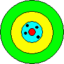
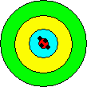
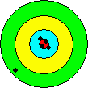

Physics Lab Tutorials
With every measurement, no matter how carefully it is made, there is an a
ssociated error inherent with the measurement; no one can ever exactly
measure the true value of a quantity. The magnitude of the error is due
to the precision of the measuring device, the proper calibration of the
device, and the competent application of the device. This is different than
a gross mistake or blunder. A blunder is due to an improper application of
the measuring device, such as a misreading of the measurement. Careful and
deliberate laboratory practices should eliminate most blunders.
To determine the error associated with a measurement, scientists often refer
to the precision and accuracy of the measurement. Most people believe accuracy
and precision to mean the same thing. However, for people who make measurements
for a living, the two terms are quite different. To understand the difference
between these two properties, let us use the analogy of the marksman who uses a
gun to fire bullets at a target. In this analogy, the gun is the instrument,
the marksman is the operator of the instrument, and the results are determined
by the location of the bullet holes in the target.
The precision of an experiment is a measure of the reliability of the experiment,
or how reproducible the experiment is. In this figure, we see that the marksman's
instrument was quite precise, since his results were uniform due to the use of a
sighting scope. However, the instrument did not provide accurate results since
the shots were not centered on the target's bull's eye. The fact that his results
were precise, but not accurate, could be due to a misaligned sighting scope, or a
consistent operator error. Therefore precision tells us something about the quality
of the instrument's operation.

The accuracy of an experiment is a measure of how closely the experimental
results agree with a true or accepted value. In this figure, we see a different
experimental result. Here, the shots are centered on the bull's eye but the
results were not uniform, indicating that the marksman's instrument displayed
good accuracy but poor precision. This could be the result of a poorly
manufactured gun barrel. In this case, the marksman will never achieve both
accuracy and precision, even if he very carefully uses the instrument. If he
is not satisfied with the results he must change his equipment. Therefore
accuracy tells us something about the quality or correctness of the result.

As scientists, we desire our results to be both precise and accurate. As
shown in this figure, the shots are
all uniform and centered on the bull's eye. This differs from the first figure in
that the marksman has compensated for the poorly aligned sighting scope.
One benefit of taking many measurements of a single property is that
blunders are easily detected. In the figure below we see that the results
are both accurate and precise with the exception of an obvious blunder.
Because several measurements were made, we can discount the errant data point
as an obvious mistake, probably due to operator error.

Physics Lab Tutorials
If you have a question or comment, send an e-mail to Lab Coordinator:
Jerry Hester
|
|
|
|
|
|

Copyright © 2000. Clemson University.
All Rights Reserved.
Photo's Courtesy Corel Draw.
Last Modified on 01/27/2006 14:25:18.
|
|